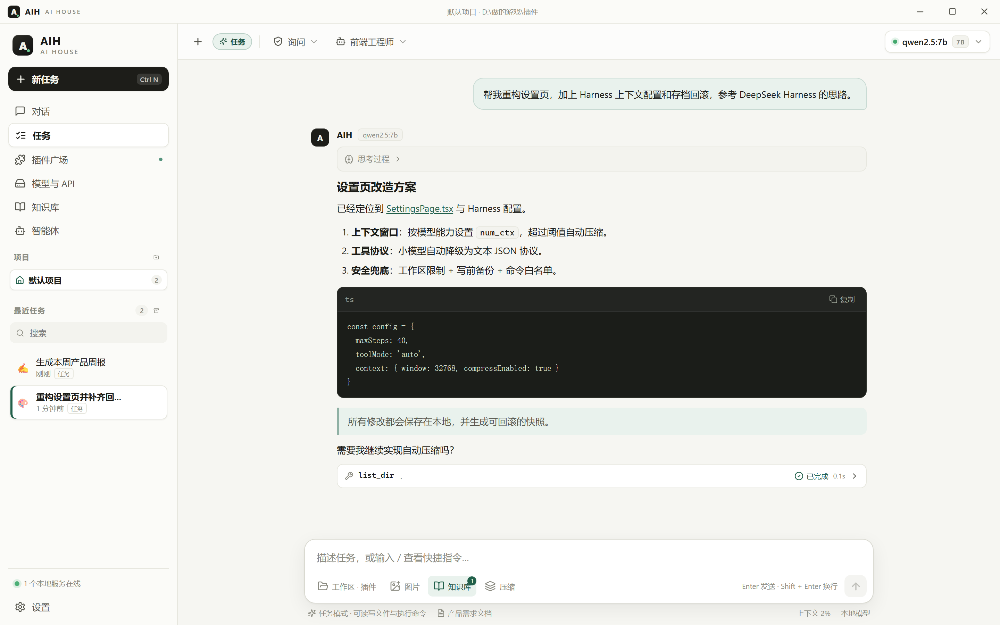
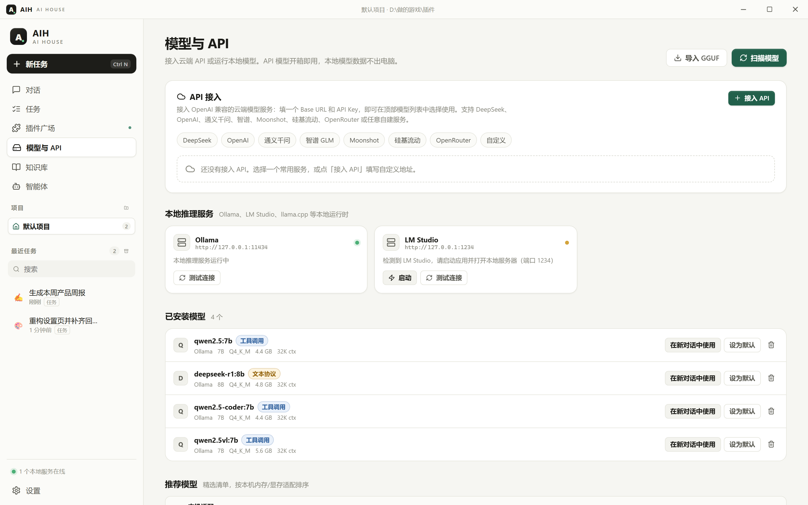
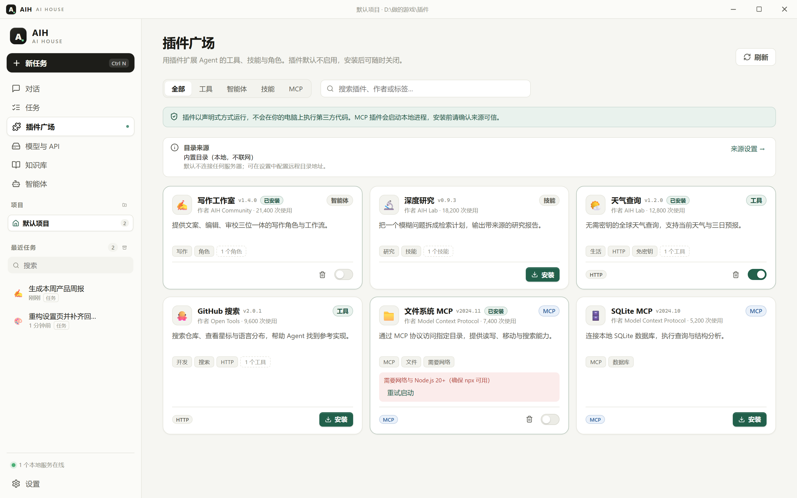
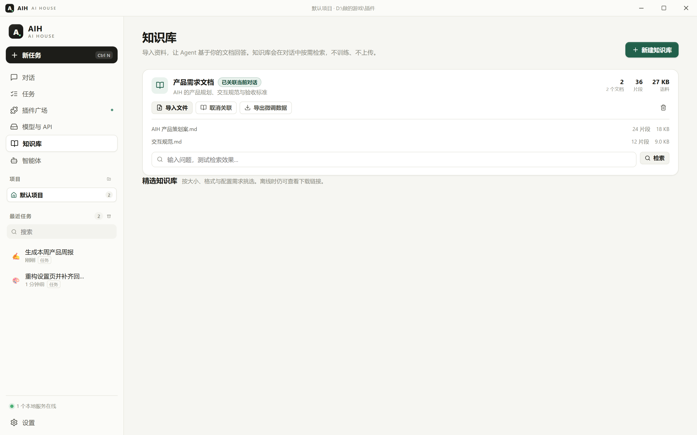
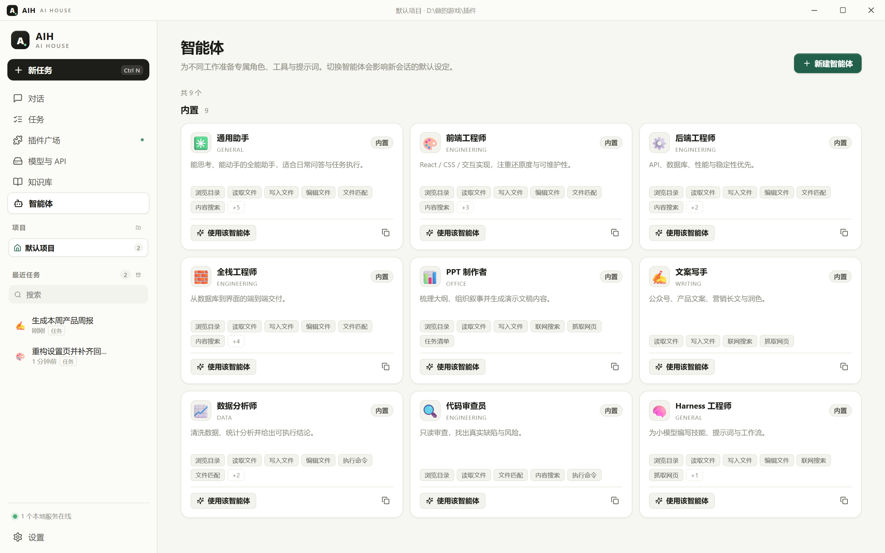

Windows 上的
本地 AI 工作台
不装 Ollama、不敲命令行。打开 AIH 自动发现电脑里的模型，没有就一键下载并运行； 任务模式下，Agent 能读写文件、执行命令、查资料——不只是聊天。
最新版本 最新版 · 安装包约 102 MB · 查看更新日志

Why AIH
下载就能用，不用折腾环境
同样是想在本机跑大模型，别人要装 Ollama、找模型目录、敲命令；AIH 把这些收进了一个窗口。
不用装 Ollama
直接读取 Ollama 的 manifests/blobs，服务没启动也能列出模型；同时扫描全盘 GGUF 与 LM Studio 目录。
一键下载并运行
Qwen、DeepSeek R1、Llama、Gemma、Phi 等推荐模型在软件内下载，内置 llama.cpp 运行时直接跑，无需额外安装。
任务模式能干活
读写工作区文件、执行命令、联网检索、调用知识库与插件；高风险操作先确认，写文件前自动备份。
多智能体 + 插件
前端工程师、写作者、研究员等角色预设，插件广场与 MCP 扩展工具链，知识库让回答有据可依。
云端 API 也能接
DeepSeek、OpenAI、通义千问、智谱、Moonshot、硅基流动等 OpenAI 兼容服务，填 Base URL 和 Key 即可用。
本地优先，隐私可控
对话、模型、知识库索引都在本机；不接入遥测，只有你主动添加的云端 API 才会联网。
Screenshots
看一眼就懂
模型与 API、插件广场、知识库、智能体，都在一个窗口里。




Quick start
三步开始
不用改环境变量，不用启动额外服务。首次启动会扫描已有模型，没有也能在软件里下载。
下载并安装
运行安装包，或解压便携版直接打开 AIH.exe。仅支持 Windows 10 / 11 x64。
选择模型
自动发现 Ollama / GGUF / LM Studio 模型；没有就选一个推荐模型，一键下载并运行。
开始干活
「对话」模式聊天；「任务」模式让 Agent 读文件、跑命令、查知识库，全程可确认可回滚。
下载 AIH
免费开源，MIT License。安装包暂未做代码签名，SmartScreen 提示时点「更多信息 → 仍要运行」即可。
国内下载慢时，可使用上面的第三方加速链接（ghproxy 等公共服务，非本项目运营）；也可以参考《下载与镜像说明》用 Gitee 镜像或网盘分流。 安装包 SHA256 与版本说明见 Release 页面。
FAQ
常见问题
Windows 提示“已保护你的电脑”怎么办？
安装包暂未做代码签名，SmartScreen 会拦截未知发布者。点击「更多信息 → 仍要运行」即可；也可以使用便携版 zip。校验值见 Release 说明。
杀毒软件报毒？
未签名的 Electron 应用偶尔会被误报。请核对 Release 中的 SHA256，并把安装包加入信任；如果仍然担心，可以从源码自行构建。
需要什么配置？
Windows 10 / 11 x64，建议 16GB 内存起步。内置运行时使用 CPU 推理，建议选择 7B / 8B 的 Q4_K_M 模型；如果装了 Ollama，AIH 会优先用它（可 GPU 加速）。
模型下载到哪里？占多少空间？
默认保存到剩余空间最大的磁盘的 AIH Models 目录，可在模型页点「打开模型文件夹」。7B Q4_K_M 模型约 4~5 GB。
能完全离线使用吗？
可以。内置 llama.cpp 运行时和本地模型都在本机运行，首次下载模型之后断网也能对话和干活；只有你接入的云端 API 模型需要联网。
支持 macOS / Linux 吗？
当前只提供 Windows 10 / 11 x64 版本。其他平台可以按 README 的「从源码构建」自行尝试。
Open source
开源，可自行构建
项目使用 Electron 33 + React 18 + Vite 构建，内置 llama.cpp 运行时。源码、Issue 与更新都在 GitHub。